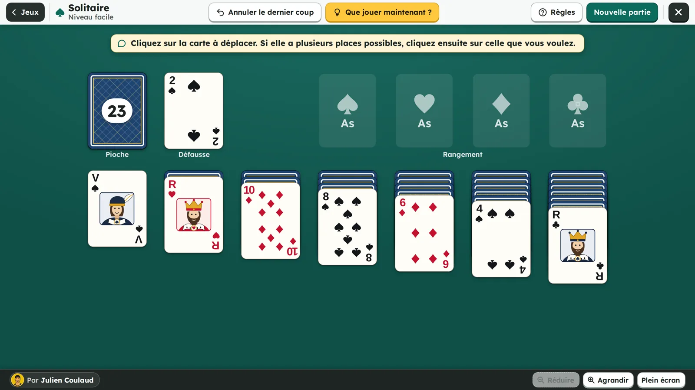
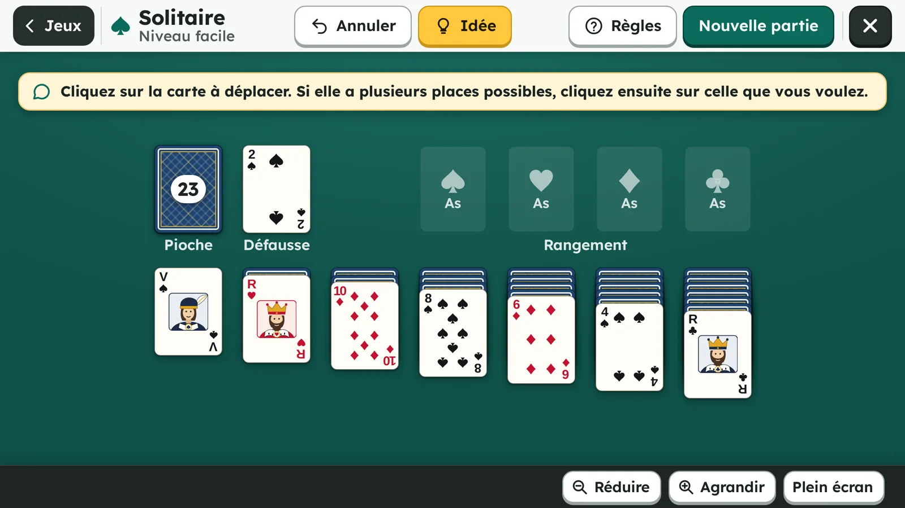
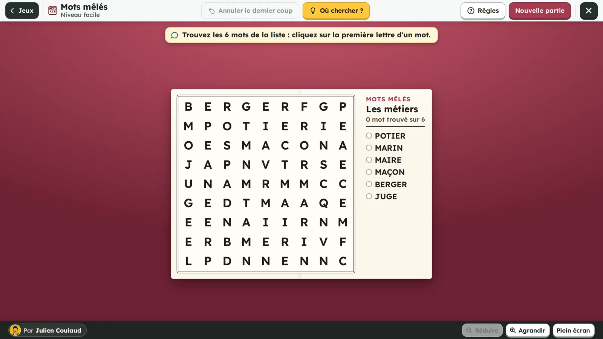
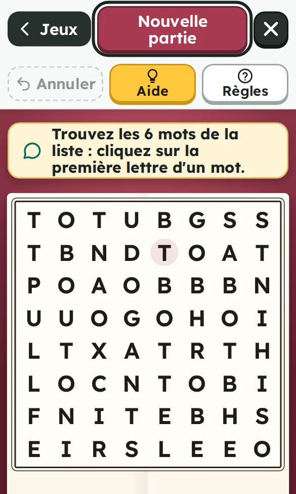

Régler la taille avant le premier tour
Sur ordinateur, ouvrez la bibliothèque et repérez les boutons Réduire et Agrandir dans le pied de page. Cliquez sur Agrandir une fois, puis regardez la plus petite information dont vous avez besoin : la valeur d’une carte, une lettre ou le nombre de cases restantes.


Si la taille vous convient, lancez le jeu. Le réglage se partage entre la bibliothèque et les jeux sur le même navigateur.
Ajuster pendant la partie
Vous pouvez aussi ouvrir le réglage depuis le jeu. Par exemple, au solitaire, vérifiez que vous distinguez le cœur du carreau et que vous lisez l’index dans le coin de la carte. Aux mots mêlés, vérifiez que la grille et la liste des mots sont faciles à parcourir.

Si le bouton est grisé, la taille a atteint une limite pour cette fenêtre. Agrandissez la fenêtre ou essayez un écran plus large. Si les commandes tiennent mal à l’écran, cliquez sur Réduire.
Sur téléphone ou tablette
Sur un écran étroit, le jeu adapte déjà son plateau et ses commandes. Les boutons de taille peuvent ne pas apparaître. Si une grille reste difficile à lire, essayez le mode paysage ou un appareil avec un écran plus grand.

Vous découvrez le site ? Le guide pour choisir un premier jeu donne un geste simple à essayer dans chaque jeu.